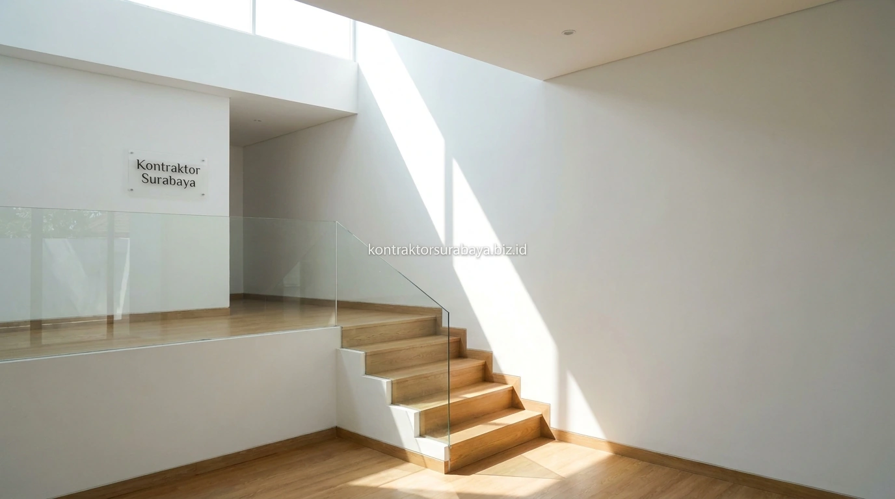

Memiliki kavling tanah dengan lebar terbatas di perumahan Surabaya seperti Rungkut, Mulyorejo, Sambikerep, hingga Sukolilo sering kali menimbulkan dilema antara kebutuhan ruang keluarga yang banyak dan keterbatasan luas tapak tanah. Membangun rumah bertingkat konvensional kerap menyisakan ruang gelap di lantai dasar dan tangga panjang yang memakan tempat. Konsep rumah split-level hadir sebagai solusi arsitektur cerdas yang memaksimalkan volume ruang vertikal melalui ketinggian lantai yang bertingkat secara dinamis.
1. Apa yang Membedakan Rumah Split-Level dari Rumah Bertingkat Biasa
Rumah split-level membagi ruang menjadi beberapa area dengan ketinggian lantai yang berbeda namun saling terhubung, berbeda dengan rumah bertingkat yang memisahkan tiap lantai secara penuh dengan tangga lurus.
Pada rumah bertingkat biasa, setiap lantai memiliki ketinggian penuh yang terpisah jelas satu sama lain, sementara pada split-level, perbedaan ketinggian antar area bisa hanya setengah lantai (sekitar 1,2 hingga 1,5 meter), sehingga ruang terasa lebih menyatu, terbuka, dan lapang meski tetap terbagi secara zonasi fungsi.
2. Keunggulan Split-Level untuk Lahan Sempit
Efisiensi volume ruang, pencahayaan alami yang lebih merata, dan pemisahan area privat dan publik tanpa tangga panjang adalah tiga keunggulan utama split-level pada lahan sempit:
- Efisiensi Lahan & Volume Ruang: Memanfaatkan ketinggian ruang di atas garasi atau carport sebagai ruang keluarga mezzanine tanpa menambah lantai penuh.
- Pencahayaan Alami Menyeluruh: Perbedaan level lantai menciptakan celah vertikal yang memungkinkan sinar matahari menyinari hingga bagian tengah rumah.
- Sirkulasi Udara Lebih Segar: Efek cerobong udara (stack effect) terjadi alami karena udara panas terdorong ke level tertinggi dan keluar melalui ventilasi atap.
- Zonasi Ruang Alami: Memisahkan ruang tamu publik dengan ruang keluarga privat tanpa perlu membangun sekat dinding masif yang membuat rumah sempit.

3. Elemen Struktur Utama pada Desain Rumah Split-Level
Tangga pendek antar level, void penghubung, balok transfer pada perbedaan ketinggian, dan pondasi yang disesuaikan per level adalah empat elemen struktur utama pada desain rumah split-level:
- Tangga Pendek Antar Level: Menghubungkan area dengan perbedaan ketinggian (hanya 4-6 anak tangga) tanpa memakan banyak ruang sirkulasi.
- Void Penghubung Antar Level: Membantu interaksi visual anggota keluarga, serta memfasilitasi aliran cahaya dan udara ke seluruh sudut rumah.
- Balok Transfer Struktural: Diperlukan pada titik peralihan ketinggian untuk menopang beban pelat lantai gantung di atasnya secara presisi.
- Pondasi Bertingkat (Step Footing): Disesuaikan per level mengingat setiap area memiliki elevasi lantai yang berbeda dari permukaan tanah dasar.
4. Bagaimana Split-Level Membantu Pencahayaan Alami Masuk ke Setiap Ruang?
Perbedaan ketinggian antar level menciptakan bukaan tambahan pada bagian atas dinding penghubung, sehingga cahaya dapat masuk ke area yang biasanya sulit dijangkau pada rumah dengan lantai datar penuh.
Void atau celah yang terbentuk akibat perbedaan ketinggian ini berfungsi seperti jendela clerestory yang membantu cahaya alami menjangkau bagian tengah rumah, area yang pada denah konvensional sering kali menjadi titik paling gelap dan pengap karena jauh dari dinding luar kavling.
5. Penempatan Fungsi Ruang yang Ideal pada Rumah Split-Level
Area publik seperti ruang tamu di level terendah, area semi privat seperti ruang keluarga di level tengah, dan kamar tidur di level tertinggi adalah pola penempatan fungsi yang umum diterapkan pada rumah split-level:
- Level 1 (Elevasi ±0.00): Carport, teras depan, ruang tamu formal, dan area servis/dapur kotor.
- Level 1.5 (Elevasi +1.50): Ruang makan, dapur bersih, dan ruang keluarga utama dengan akses pandang ke void taman belakang.
- Level 2 (Elevasi +3.00): Kamar tidur anak, ruang belajar, dan kamar mandi keluarga.
- Level 2.5 (Elevasi +4.50): Kamar tidur utama (master bedroom) dengan kamar mandi dalam dan balkon privat yang tenang.
6. Kesalahan Umum dalam Merancang Rumah Split-Level
Perbedaan ketinggian antar level yang terlalu ekstrem, kurangnya penerangan pada tangga penghubung, sirkulasi yang membingungkan, dan minimnya railing pengaman adalah empat kesalahan umum dalam merancang rumah split-level:
- Perbedaan Level Terlalu Banyak & Ekstrem: Membuat penghuni merasa kelelahan karena harus terus-menerus naik-turun tangga untuk aktivitas sederhana.
- Kurangnya Penerangan Tangga: Tangga pendek yang kurang pencahayaan dapat membahayakan keselamatan penghuni saat malam hari.
- Sirkulasi yang Membingungkan (Labirin): Terlalu banyak belokan antar level dapat menyulitkan tamu serta mobilisasi barang perabotan berukuran besar.
- Minimnya Railing Pengaman: Perbedaan level lantai tanpa pembatas pagar yang memadai meningkatkan risiko jatuh bagi anak balita dan lansia.
"Rumah split-level yang berhasil adalah yang mampu menghadirkan lapang dan keterbukaan ruang tanpa membuat penghuni merasa terbebani oleh banyaknya trap tangga."
Setiap lahan memiliki kontur dan orientasi yang berbeda, sehingga penerapan konsep split-level perlu disesuaikan melalui survei dan konsultasi langsung dengan arsitek. Lihat referensi visual lebih lengkap pada galeri proyek kami, atau pelajari cakupan layanan pada halaman jasa arsitek Surabaya.